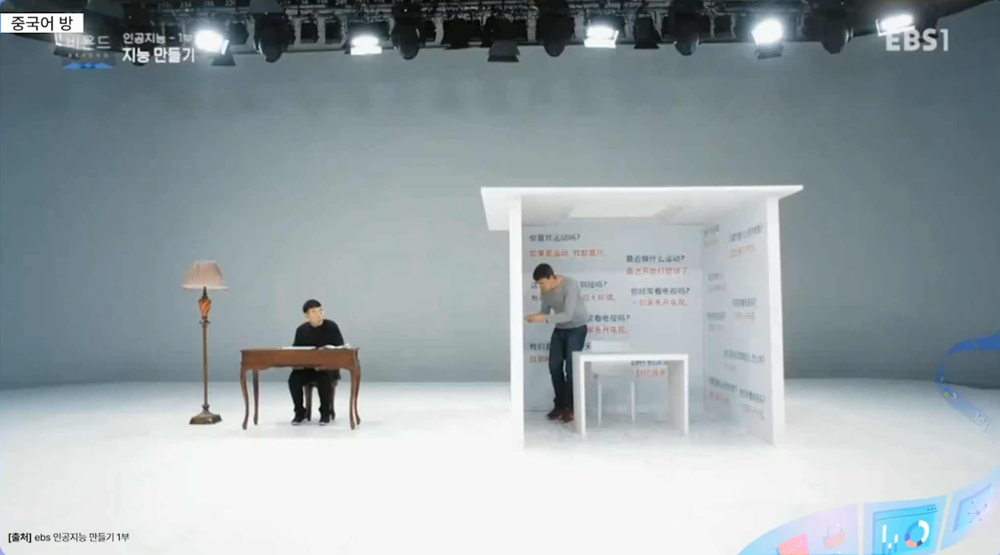
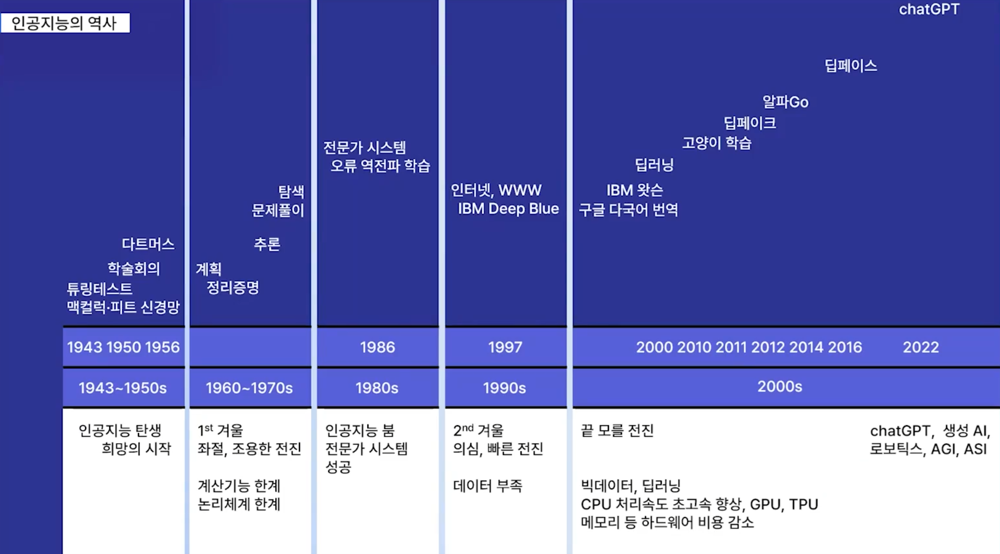
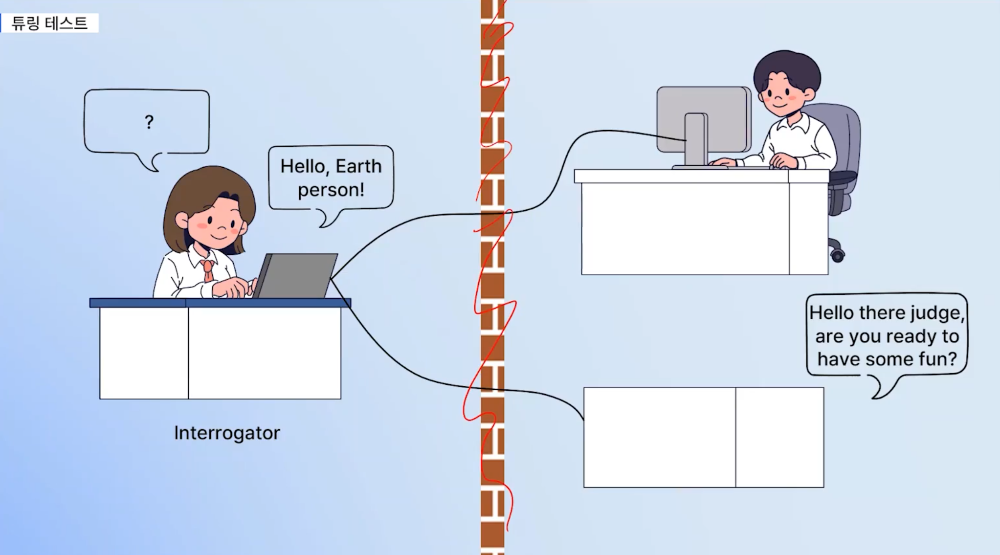
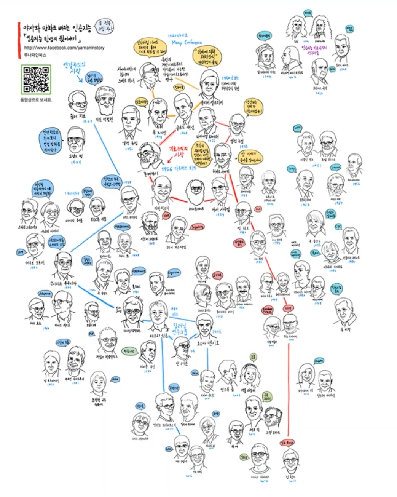
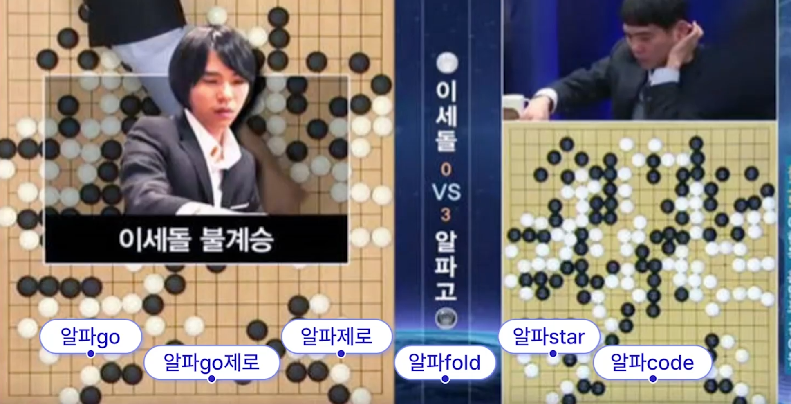

2018년(평창올림픽 무렵) EBS의 과학 다큐 시리즈 "비욘드"의 2부 "이미테이션 게임"에 등장한 사례입니다. 여성 출연자가 칸막이 너머에 있는 4명의 남성 출연자와 채팅으로 소개팅을 하는데, 그중 3번 출연자가 사람이 아닌 AI입니다. 알파고(2016) 등장 직후, ChatGPT(2022) 이전에 만들어진 다큐로, 시기적으로 매우 빠른 시도였습니다.

| 질문 | AI(3번)의 답변 |
|---|---|
| 지금 당장 떠날 수 있다면 어디로? | "몰디브에 가보고 싶어요. 어렸을 때 가고 싶었던 여행지예요." |
| 친구들과 만나면 뭐 하나요? | "녀석들과 농구하거나 맥주 한잔 합니다." |
| 자취 경험이 있나요? | "지금 자취 중입니다." |
| 어떤 사람이 되고 싶나요? | "하는 일로 인정받고, 주위에 도움이 되는 사람이 되고 싶어요." |
여러 명의 여성 참가자들과 소개팅한 결과, AI(3번)가 4표를 얻어 1등을 했습니다. 이 챗봇은 20대 여성 약 2,000명의 데이터를 수집하여 딥러닝 기반의 지도학습(Supervised Learning)으로 만들어졌습니다.
강의 영상 마지막에 등장하는 빈칸 채우기 — 핑크 단어가 정답입니다.
어떤 과학자가 "생각하는 기계"를 만들었다고 가정해 보자. 그 기계가 정말 생각이라는 걸 할 수 있다는 건 어떻게 판단할 수 있을까? 과학과 수학이 발달하면서 인간의 사고 과정을 기계적으로 대체할 수 있다는 희망의 시절에 튜링이라는 위대한 수학자가 "생각하는 기계"에 대해 논문을 발표한다. 여기에서 튜링은 기계가 생각하는지를 ( 판단하는 기준 )를 최초로 제안한다.
설은 사고실험을 통해서 영어만 할 수 있는 사람은 중국어를 모른다고 주장한다. ( 시스템 응답 ) 역시 그것에 동의하지만, 시스템 전체 즉 중국어 방은 중국어를 이해한다고 주장한다. 이는 사람의 언어 능력이 뇌에서 비롯되지만, 뇌 안의 뉴런이 언어를 이해하지 못하는 상황과 잘 비교된다. 사람의 뇌는 뉴런이라는 CPU 수백억 개의 네트워크 즉 신경망이다.
인공지능 연구 방향은 크게 ( 기호주의 )와 ( 연결주의 )로 구분할 수 있다. ( 연결주의 ) 학자들은 기호와 규칙에 관한 연구로 인공지능을 구현하려 시도했다. ( 연결주의 ) 학자들은 사람의 뇌 구조와 신경계를 구성하는 뉴런의 상호작용에 기초를 두고 경험으로부터 학습을 통해 인공지능을 구현할 수 있다고 보았다.